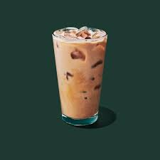

Caffe Americanos

Dark Roast
Cappuccino
Espresso
Flat White
Caffè Latte
Caffè Mocha
Pistachio Latte
Cold Coffee

Pistachio Cream Cold Brew

Nitro cream cold brew

iced coffee

Caffè Latte

blonde vanilla latte

Iced Lavender Latte involves just 3 ingredients. Espresso, lavender simple syrup, and milk are poured over ice for your new fave drink
Iced Lavender Latte

Iced Caffè Americano
Extras